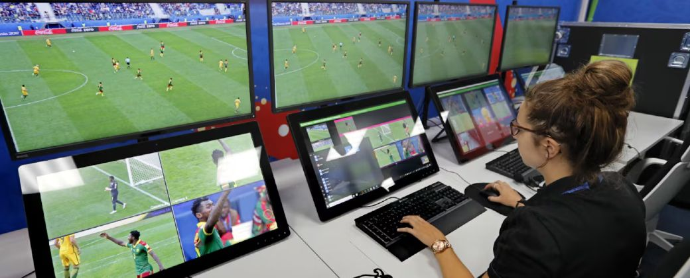

En el Mundial 2026, los árbitros utilizaron un sistema avanzado de tecnología que incluye cámaras corporales, sensores y conexión permanente con inteligencia artificial.

Cámaras corporales
Una cámara corporal compacta integrada con el uniforme del juez principal, estabilizada por inteligencia artificial. También usaban auriculares y micrófonos incorporados y relojes inteligentes para mantener contacto directo con el VAR.
GPS y dispositivos corporales
Dispositivo de posicionamiento global para registrar el movimiento del juez en tiempo real. Esta tecnología permite que las decisiones arbitrales sean más precisas y rápidas.
Inteligencia artificial
El sistema de IA analiza las imágenes de las cámaras y los datos del GPS para detectar jugadas polémicas como el fuera de juego, las manos y las faltas. Esto ayuda a los árbitros a tomar mejores decisiones.
La tecnología en el Mundial demuestra que el fútbol moderno combina pasión deportiva con innovación científica, haciendo que el juego sea más justo y emocionante para todos.